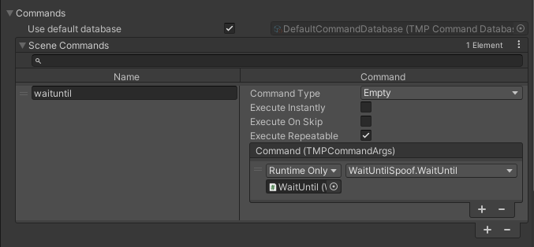

Scene commands
In addition to TMPCommand, which the commands we've seen so far derive from and which are stored on disk, there is also the SceneCommand type. It allows you to call any method of your scene objects.
Adding scene commands
When you add a new element to the SceneCommands dictionary found in TMPWriter's Commands foldout, you will see
an empty field Name on the left side. Here you can assign a name to reference the command with.
On the right, in UnityEvent field, you can simply drag any GameObject and choose the method to call when this command is invoked.
The example creates a SceneCommand called "waituntil", which calls a method "WaitUntil(TMPCommandArgs args)".

Using scene commands
SceneCommands are applied in the exact same way as their respective counterpart: SceneCommand tags can be directly inserted into the text, with a '!' prefix.